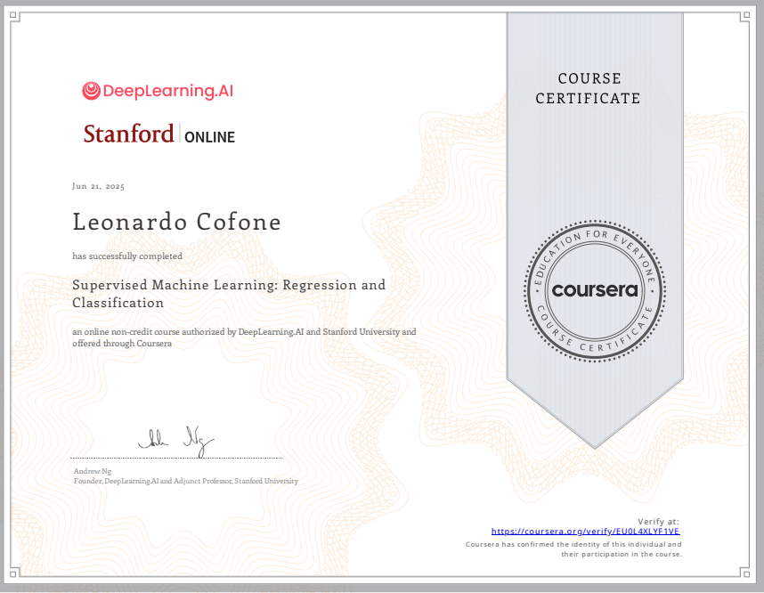
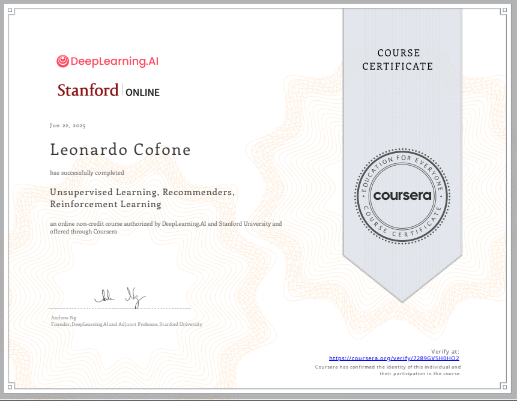
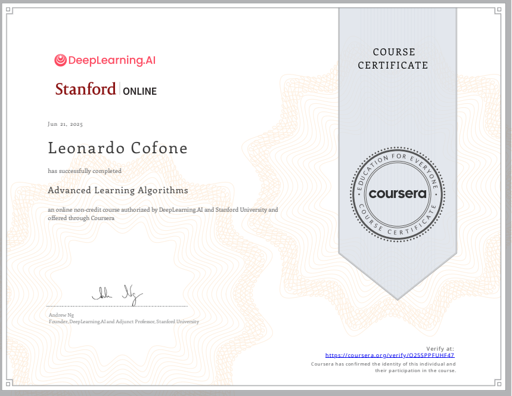
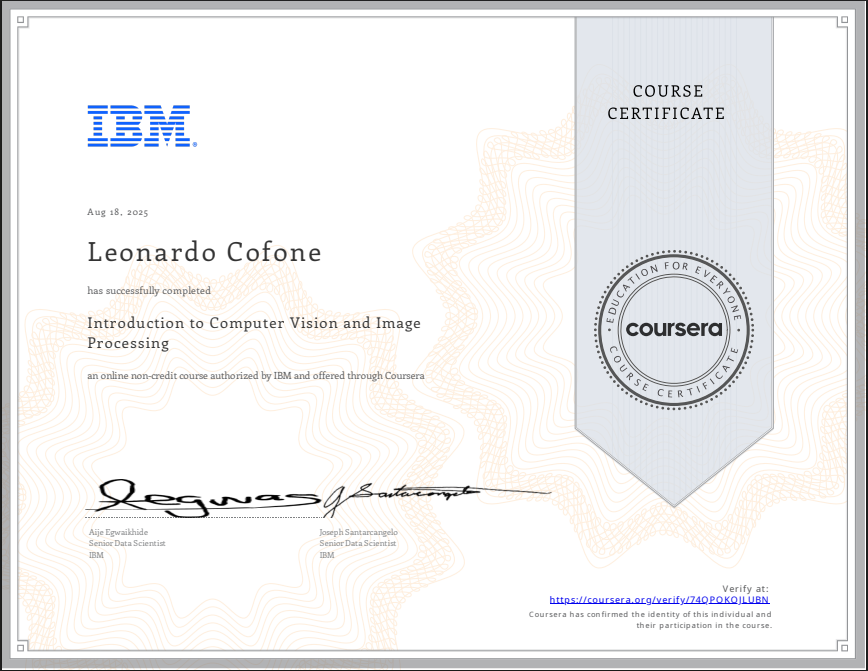
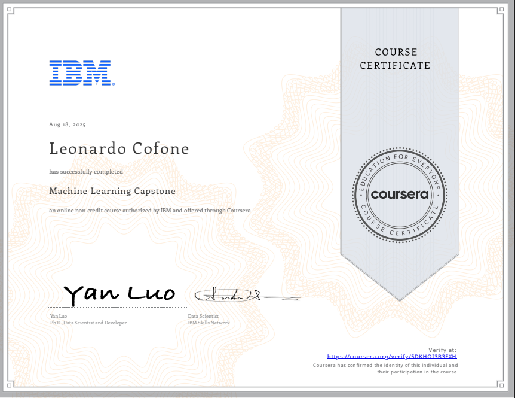
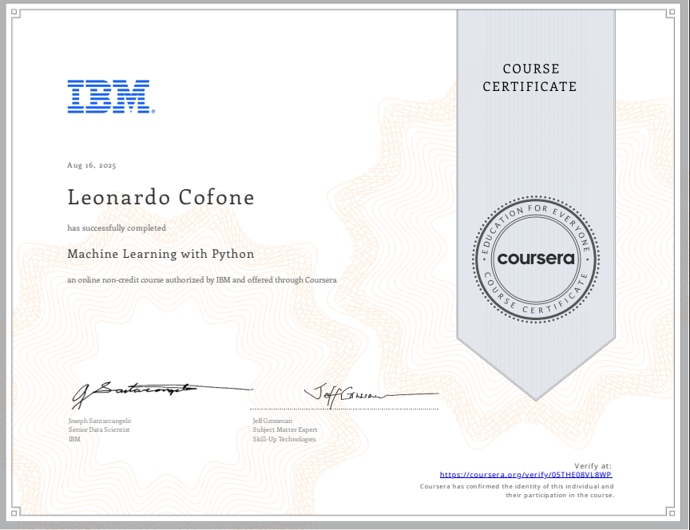

Leonardo Cofone
AI engineer & developer | 16 years old | specialized in Machine Learning and Deep Learning
Link Principali
PROFESSIONAL PROFILE
Through years of personal and self-driven study, I have developed strong skills in Python programming and a deep understanding of Artificial Intelligence. I have built and experimented with a wide range of Machine Learning, Deep Learning, and NLP algorithms, including computer vision models, predictive analytics, and large language models. I enjoy creating practical AI solutions, exploring both pre-trained and custom models, and developing intelligent agents that can learn, reason, and solve real-world problems. My experience spans structured and unstructured data, and I am passionate about leveraging AI to create meaningful, impactful applications.
Show my full CV
WORK EXPERIENCES
-
AI Developer – EgoLog S.r.l. (August 2025 – February 2026, 7 months)
Designed, developed, and deployed AI agent solutions for clients using n8n, automating repetitive tasks and workflows. Delivered measurable improvements in operational efficiency, enabling clients to save time and optimize processes through practical AI applications. -
AI Developer – Top Evolution Srl (June 2025 – August 2025, 3 months)
Contributed to AI automation projects for businesses, designing and optimizing machine learning pipelines. Focused on implementing practical AI solutions that improve efficiency and performance across real-world workflows. - Developed multiple personal AI projects, including deep learning models for computer vision, predictive analytics, and language understanding, showcasing hands-on experience in both research and practical applications.
- Highly motivated to learn, innovate, and contribute to AI-driven solutions that have real-world impact.
EDUCATION AND LEARNING
- Currently studying at Galileo Galilei Scientific High School, Trento – Expected graduation: June 2028
- Actively expanding my knowledge in Artificial Intelligence through hands-on projects, online specializations, advanced courses, competitions and books related to AI.
- See below for a detailed list of completed certifications and courses.
COMPUTER SKILLS
Programming Languages: Python (advanced), C++ (basic), with basic knowledge of HTML, CSS, and JavaScript, enabling creation of simple interactive web interfaces and AI-powered applications.
Artificial Intelligence & Machine Learning: Extensive hands-on experience with supervised and unsupervised learning, deep learning, computer vision, predictive modeling, reinforcement learning, NLP, and agentic AI. Skilled in developing AI agents, autonomous chatbots, large language model applications, and WebLLM-powered systems, leveraging both pre-trained and custom models for real-world applications.
Relevant Projects & Applications: Designed and implemented complete AI pipelines, covering classification, regression, clustering, dimensionality reduction, and data visualization. Built neural network architectures for complex computer vision tasks and NLP systems, creating autonomous AI agents and chatbots using prompt engineering and LLMs. Applied knowledge to competitions, personal projects, and practical solutions, optimizing model performance, automating workflows, and tackling real-world datasets. Experienced with tracking experiments, model versioning, and performance evaluation to ensure reliable and scalable AI systems.
CERTIFICATIONS
Selected certifications highlighting expertise in Machine Learning, Deep Learning, NLP, and Computer Vision, with hands-on projects and real-world datasets
Machine Learning Specialization
Andrew Ng - Stanford University, 94h
Complete coverage of all key Machine Learning concepts and techniques.
Supervised Machine Learning
Andrew Ng - Deep Learning, 33h
Theory, mathematics, and practical exercises in regression, classification, and evaluation metrics.
Unsupervised ML, RL, Recommenders
Andrew Ng - Deep Learning, 27h
Intensive program in clustering, recommender systems, and reinforcement learning.
Advanced Learning Algorithms
Andrew Ng - Deep Learning, 34h
Full immersion in neural networks, optimization strategies, and regularization.
Computer Vision & Image Processing
IBM, 22h
Applied OpenCV for image detection, classification, analysis, and preprocessing.
Machine Learning Capstone
IBM, 20h
End-to-end ML solution on real-world datasets and deployment.
Machine Learning with Python
IBM, 20h
Model building with Python, scikit-learn and data workflows.
PROJECTS
Here are some example of my recent work, see my github or kaggle account for more
NeuroVision
Interactive Tool · Deep LearningAn interactive browser-based tool to explore and visualize how neural networks learn, entirely built from scratch.
See more
NeuroVision is an interactive web tool that makes neural networks easy to understand by showing how they learn step by step. It lets you watch how data flows through the network, how neurons work together across layers, and how the model improves over time through forward and backward propagation. You can explore key concepts like weights, biases, activations, and loss functions in real time, seeing exactly how a neural network learns from examples. In short, NeuroVision turns complex AI mechanics into a clear, hands-on experience that anyone curious about machine learning can grasp and enjoy.
LerriAI
AI Assistant · LLM · ProductivityA powerful personal AI assistant to help you organize your life, manage everything with ease. (Currently offline)
See more
LerriAI is built around a simple idea: most people don’t lack ability, they struggle with organization. Life throws countless tasks, deadlines, emails, routines, goals, and unexpected problems at us, and even the most motivated individuals can easily feel overwhelmed. LerriAI exists to manage that complexity. It is not just a chatbot or a simple assistant, it is a living system of intelligent agents that work together to structure your day, support your decisions, and keep your personal world running smoothly. Each agent has a specific role, analyzing your habits, priorities, and preferences, planning, reminding, optimizing, summarizing, and tracking progress, while communicating through a shared intelligence layer. In this way, LerriAI turns chaos into order, complexity into clarity, and everyday distractions into focused, actionable guidance, helping you stay on track with what truly matters.